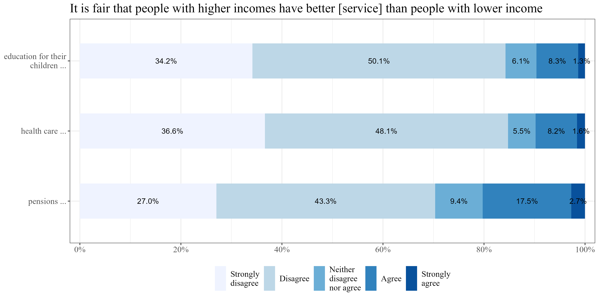
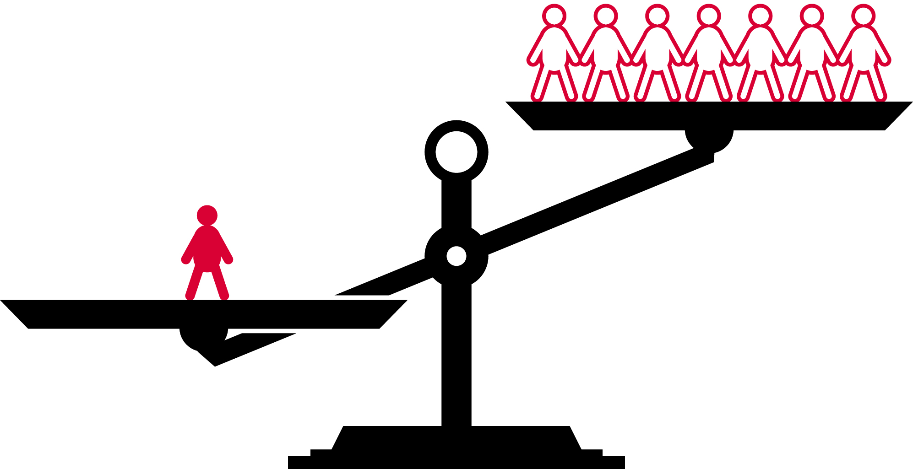
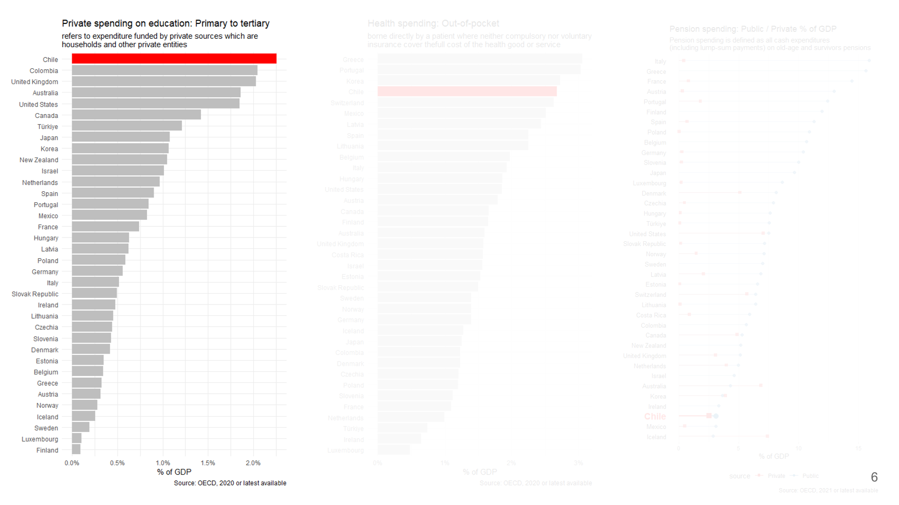
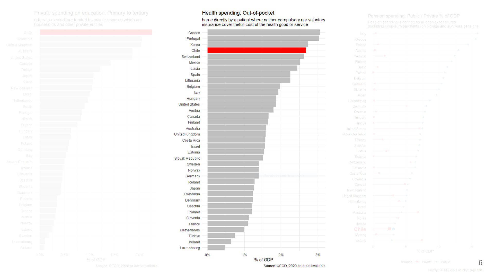
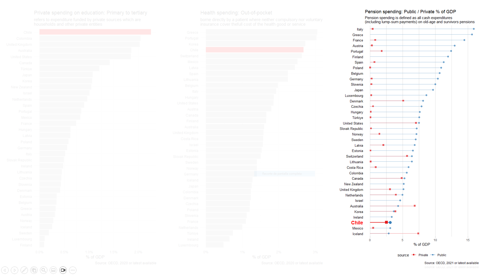
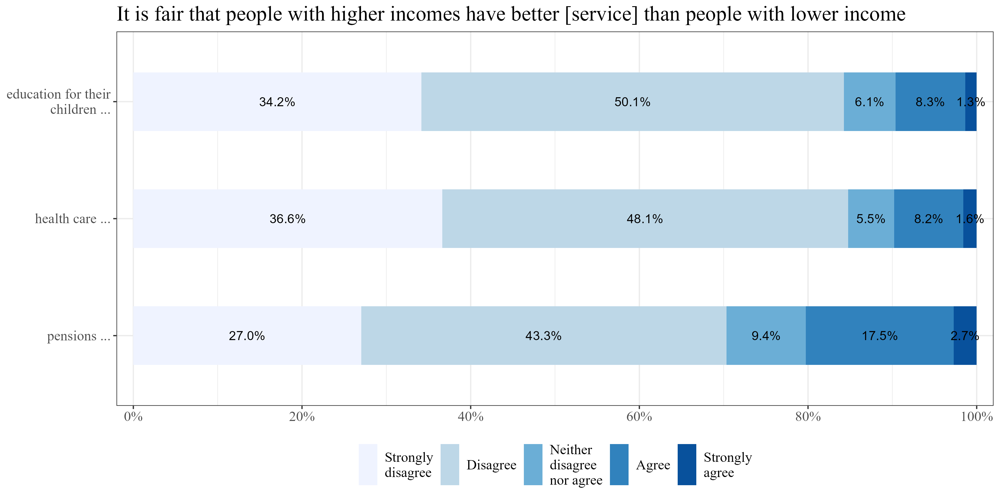
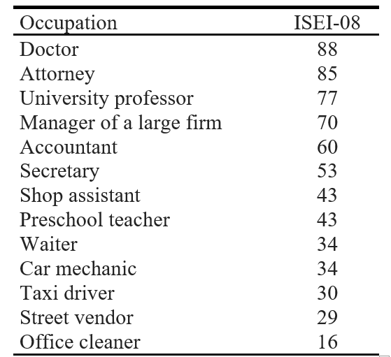
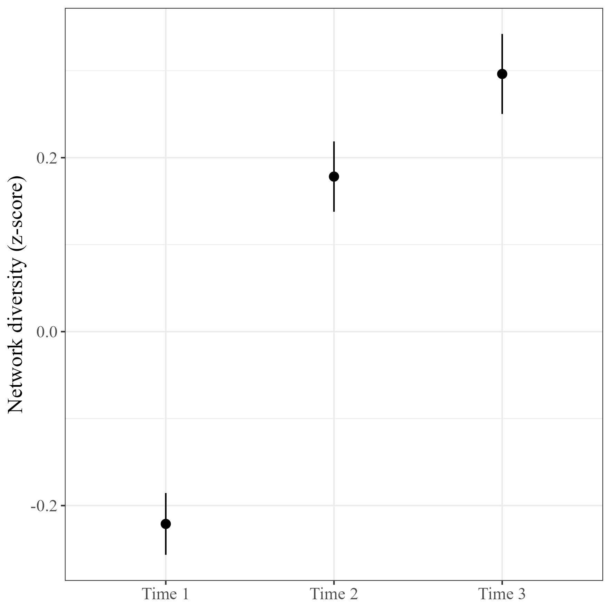
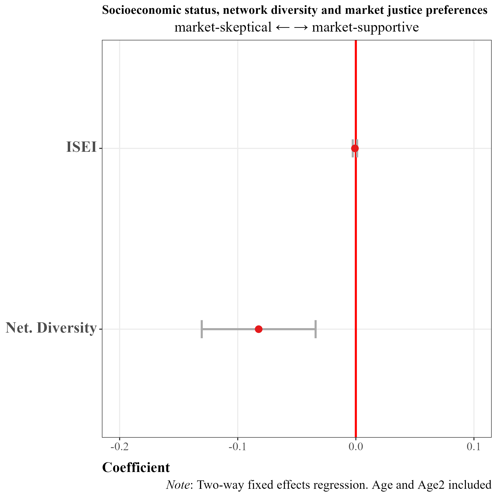
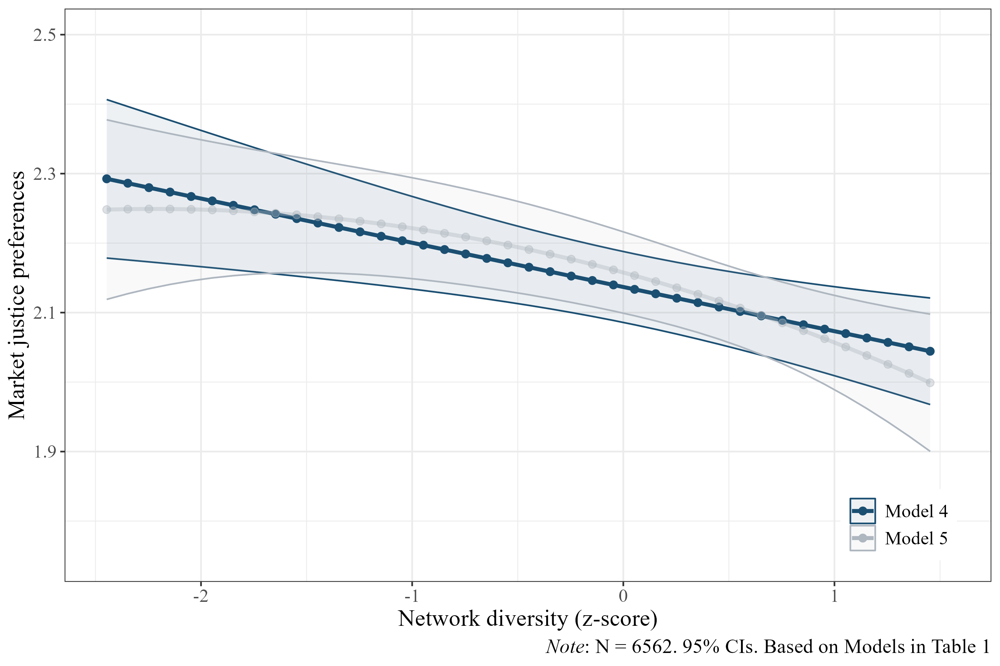

Julio Iturra-Sanhueza1,2
1Bremen International Graduate School of Social Sciences, University Bremen
2Research Center Social Cohesion - RISC
Supervisors:
Dr. Patrick Sachweh (U. Bremen)
Dr. Olaf Groh-Samberg (U. Bremen)
Dr. Simone Schneider (U. Pompeu Fabra)

Study 1: Iturra-Sanhueza, Julio. 2025. “Class-Based Network Segregation, Economic Inequality, and Redistributive Preferences across Societies.” European Sociological Review, November 24, jcaf048. https://doi.org/10.1093/esr/jcaf048.
Study 2: Iturra-Sanhueza, Julio. 2025. More Diverse, More Skeptical? How Changes in Class-based Network Diversity Shape Public Support for Commodified Welfare Services: Longitudinal Evidence from Chile. Under review
Study 3: Iturra-Sanhueza, Julio, Castillo, Juan Carlos, Groh-Samberg, Olaf. Ties that hold: Factorial Survey Experiment on Social Cohesion and Group Composition in Chile Working paper
More info: https://github.com/phd-bigsss
Structurally advantaged positions in the labor market justify inequality to a greater extent compared to those in greater labor market risk, low-demanded skills, and lower income (Castillo, Salgado, Carrasco, & Laffert, 2024; Lee & Stacey, 2023).
Gap: most of the theories on the class-attitude link are based in cross-sectional evidence.
Therefore, they have underscored the role of “class experiences” – understood as the socialization processes linked to individual experiences within the class structure across the life course (Ares, 2020; Helgason & Rehm, 2024; Langsæther, Evans, & O’Grady, 2022).
In contexts of high inequality and modest public provision of welfare, the capacity of citizens to contribute or pay largely constraints access to welfare services (Immergut & Schneider, 2020; Lindh, 2015; Castillo et al 2024)
Unlike state redistribution, in these contexts market actors plays a salient role the provision of welfare (Svallfors, 2006)
Welfare is object of commodification on a gradient from market-led, mixed or state provision - can be traded as commodity, valued and priced (Busemeyer & Iversen, 2020)
When market agents (e.g., firms) have a greater presence in welfare provision, the role of (market) income inequality can enhance inequalities in other social domains (e.g., education, health) (Lindh & McCall, 2022)
The set of principles and norms that entail greater relevance to merit-based rewards in the labor market has been addressed under the concept of market justice (Kluegel, Mason, & Wegener, 1999; Lane, 1986).
The market-based distribution of social services implies that it is legitimized that welfare is determined on the basis of payment capacity (out-of-pocket) (Svallfors, 2007)
Thus, labour market inequalities should also be reflected in people’s attitudes towards the commodification of social services (Lindh, 2015)
By providing access to information—in this case, diversity—networks are likely to contribute to social learning processes (Druckman & Lupia, 2000; Lin, 2001).
Networks as a “social convoy” (Kahn and Antonucci, 1980) that structure information and support over the life course (Hollstein, 2023).
It is assumed that weak ties tend to change more over time as they are fed by diverse contacts (Granovetter, 1973).
Diversity could affects attitudes as it changes existential standards as they play a role of “referential structures” that provide concrete benchmarks for fairness evaluations (Immergut & Schneider, 2020; Shepelak & Alwin, 1986).
Diversity offers non-redundant information and unfamiliar perspectives (Burt, 2004; Vedres, 2022).
As individuals encounter different life experiences, they may develop critical views towards market justice (market skepticism hypothesis)
\(H_1\): the greater the changes in network diversity, the less support market justice.



ELSOC (COES): representative panel of Chile’s urban adult population, using probabilistic, stratified, cluster, and multistage sampling in large and small cities
Period: three waves (2016, 2018 and, 2023)
Attrition 2016→2023: ~ 40%
Analytical sample (unbalanced 3 waves):
Fixed effects regression:
Panel structure: repeated observations nested within individuals
within-person effects capture how changes in individual-level variables (e.g., network diversity) while controlling for the influence of time-invariant characteristics and time trends
to account for non-linear relationships of network diversity \((\beta_1\mathrm{D}_{it})\), a quadratic term is included \(({\beta_2\mathrm{D} }_{it}^2)\)
Equation:
\[\begin{aligned} Y_{it}=\beta_0+\beta_1\mathrm{D}_{it}+{\beta_2\mathrm{D} }_{it}^2+\alpha_i+\tau_t+\varepsilon_{it} \end{aligned} \]

In this study:
Higher values represent greater support for market justice.

“Now I will ask you about some of your acquaintances. It doesn’t matter if they are close to you (family or friends) or not. A person is your acquaintance if you at least know their first name, and if you could have a conversation with them if you meet them on the street or in a shopping centre.
Thinking only of people living in Chile, could you tell me, based on the following sheet and even approximately, how many people you know are…?”

Studies recommend using a single dimension to more accurately capture the network attribute (Sapin et al., 2020;Otero & Mendoza, 2023).
PCA*:
This strategy consider both the possible ties to the available occupations (Variety) and how these ties are distributed across each group (Balance) (Koopmans & Schaeffer, 2015).
*Note: ~90% of explained variance

Individual changes in occupational status, showing that increasing the socioeconomic status has a negative but non-significant relationship with support for market justice preferences (β = -0.011, p>0.05).
One standard deviation increase in diversity drives a decrease of -0.067 in the market justice scale (β =-0.067, p<0.001).
Robust to the inclusion of network size and network socioeconomic status

When network diversity is at the 20th percentile, the average predicted market justice preference is 2.20 (95% CI: 2.12 – 2.28), and it decreases to 2.08 when it is at the 80th percentile (95% CI: 2.02 – 2.14).
According to the original scale (1 to 5) of the market justice preferences index, this difference represents a change of around 3%.
Consistent with H1, individual change decreases the degree of agreement of people in Chile that income should govern access to social services - supporting the market skepticism hypothesis. Those who increase their network diversity tend to become more critical towards the market mechanism as a legitimate way of allocating social welfare
According to theorization, evidence here shows that network change attitudes. It could be through the (non-exclusive) channels of :(i) socialization: overtime, individuals normatively adapt to their new social milieus which is reflected in attitudes (Ares, 2020; Helgason & Rehm, 2024; Otero & Mendoza, 2023).
Alternatively, could be that (ii) information plays a role itself as non-redundant environments motivate attitudinal changes in line with the inferential/social learning approach (Druckman & Lupia; Mijs, 2018).
Social networks and political attitudes
Social networks and attitudes towards inequality
Attitudes in the economic domain can be affected by: (i) social influence and (ii) segregation (Lindh et al., 2021; Paskov & Weisstanner, 2022). For example, the status of family ties can affect support for government income redistribution (Paskov & Weisstanner, 2022).
Increased social integration in diverse networks contributes to critical views on inequality (Otero & Mendoza, 2023). Networks operate as inferential spaces that highlight the link between economic inequality and rewards in the labour market (Mijs, 2018).